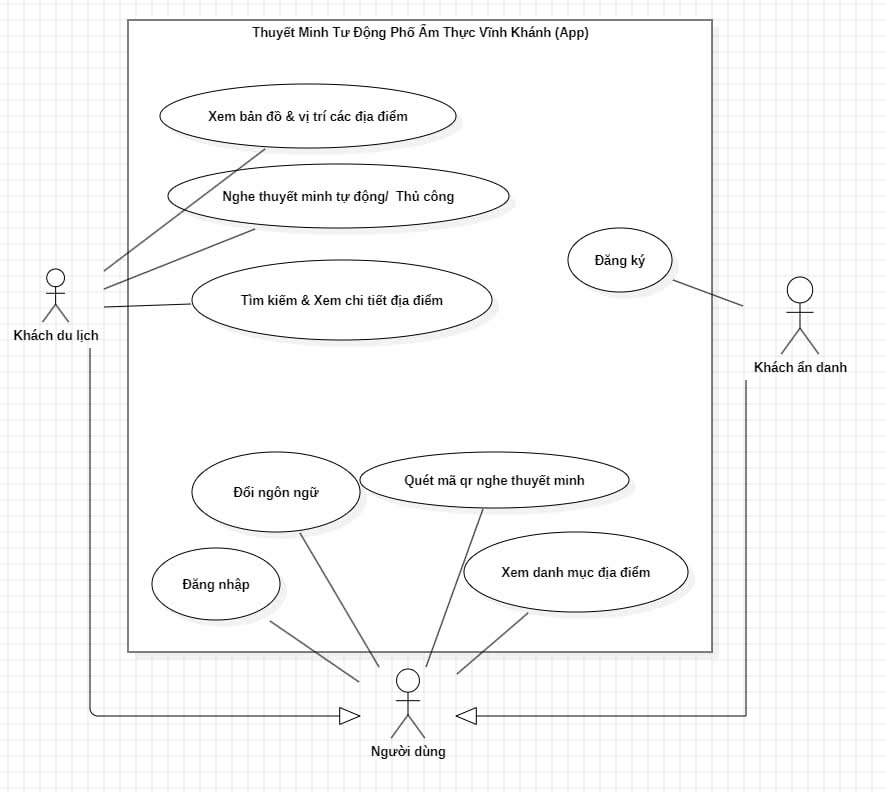
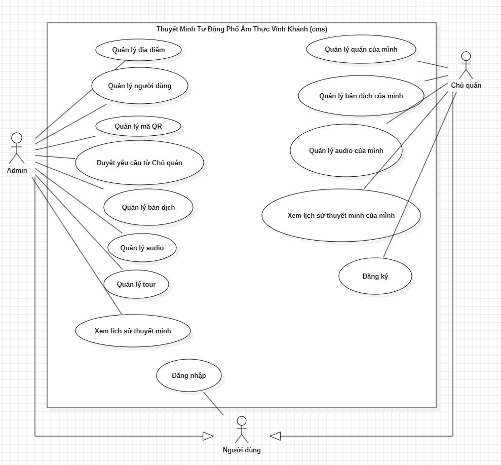

Chương 1: Tổng quan & Kiến trúc hệ thống
Dự án Vinh Khanh Food Tour là một giải pháp theo mô hình "Mobile-first" nhằm đem lại trải nghiệm thám hiểm và thưởng thức văn hoá ẩm thực đường phố tại Quận 4, TP.HCM một cách trực quan và hoàn toàn rảnh tay.
Kiến trúc hệ thống bao gồm một Mobile App được phát triển bằng .NET MAUI (C# MVVM) và Backend sử dụng Firebase Services (Firestore, Auth, Storage) thay vì một server API truyền thống.
.NET MAUI App] <--> |Real-time Sync| B(Firebase Backend
Cloud Firestore) B <--> |Quản lý, Cập nhật| C[Quản trị Hệ thống
Web CMS HTML/JS] A --> |Local Storage| D[(SQLite Database)]
Chương 2: Mobile App & Trải nghiệm người dùng
Giao diện ứng dụng di động được thiết kế chuyên biệt cho những người dùng vừa đi bộ (như tourists) vừa tìm kiếm trải nghiệm quán ăn, nơi mà tương tác tay nên hạn chế.
🗺️ Bản đồ tương tác (MapPage)
Được thiết kế full-screen. Hiển thị real-time vị trí người dùng (Real GPS/Teleport). Tuỳ biến icon Điểm yêu thích (POI) theo danh mục.
🍔 Danh sách POI (PoiListPage)
Cho phép lướt chọn nhanh bằng các Card View trực quan. Tích hợp thanh tìm kiếm thông minh và lọc danh mục nhà hàng, quán nước, v.v.
📱 Chế độ rảnh tay
Ứng dụng tối đa hoá không gian màn hình, UX/UI được thiết kế mượt mà bảo đảm du khách nhìn bao quát vị trí mà không phải thao tác nhiều.
Chương 3: Hệ thống Audio & Text-to-Speech (TTS)
Xương sống của dự án là khả năng thuyết minh tự động biến chuyến đi thành một "Tour Guide" ảo. Chúng tôi áp dụng dịch vụ Text-To-Speech (TTS) đọc giới thiệu quán ăn sinh động.
| Khía cạnh Kỹ thuật | Chi tiết Triển khai (`NarrationService`) |
|---|---|
| Engine TTS Phát Âm | Gọi hàm OS level: Native TTS của iOS và Android thông qua MAUI Media. Đảm bảo âm thanh chuẩn, tốc độ đáp ứng cao tự nhiên mà không cần kéo Audio file từ Cloud. |
| Playback Control | Bao gồm các chế độ Play, Pause, Resume và Ngắt giọng khi cần thiết hoặc khi ra khỏi vùng nhận diện quán. |
| Log lại lịch sử | Mỗi lượt đọc sẽ được ghi nhận vào `NarrationLog` bao gồm ngôn ngữ, thời gian và PoiID. |
poi.GetLocalizedDescription(lang) i18n-->>App: Trả về nội dung (Text) App->>TTS: Lệnh khởi chạy Audio
SpeakSingleAsync(poi) TTS-->>User: Phát âm thanh mượt mà
(OS Text-To-Speech) TTS->>DB: Ghi nhớ lịch sử vào đĩa
LogNarrationAsync(...)
Chương 4: GPS, Geofencing & Auto Narration
Hệ thống xác định vị trí của khách và phát động cơ chế Geofencing. Khi khách hàng bước vào bán kính hoạt động của một điểm thu hút (POI), hệ thống tự động nhận diện và tính toán phát thuyết minh.
🎯 Bán kính Geofence
Thuật toán cài đặt tham số chuẩn là 30 mét. Nếu khoảng cách giữa du khách và toạ độ quán <= 30m, sự kiện OnEnter sẽ được trigger để chuyển vào hàng đợi phát âm thanh.
⏳ Audio Cooldown
Tránh tình trạng dội âm lượng hoặc spam khi người dùng di chuyển ra vào liên tục vùng giới hạn. Thuật toán `HasPlayedRecentlyAsync` quy định mỗi quán chỉ được thuyết minh lại sau một số phút Cooldown nhất định (vd: 15-30 phút).
OnLocationChanged(Location) alt Khoảng cách <= Bán kính (Trong Geofence) Geo->>DB: Kiểm tra Cooldown chống Spam
HasPlayedRecentlyAsync(...) alt Đã hết hạn Cooldown (Check OK) DB-->>Geo: Cấp quyền cho phép phát Geo->>TTS: Ra lệnh đưa vào hàng đợi đọc
EnqueueAndNarrateAsync(pois) TTS-->>User: Phát Audio giới thiệu
(Native OS TTS) TTS->>DB: Ghi log Cập nhật mốc mới
LogNarrationAsync(...) else Đang bị Cooldown DB-->>Geo: Từ chối phát (Spam protection) end end
Chương 5: Quản trị hệ thống (Web CMS)
Giao diện quản lý (CMS - Content Management System) được đặt tại ứng dụng Web cung cấp cho Quản trị viên (Admin) và Chủ quán (Owner) sự kiểm soát toàn diện.
Kỹ thuật sử dụng JavaScript ES6 tĩnh tương tác hoàn toàn với API Firebase Database thông qua `dashboard.js` và `poi.js` mà không cần dựng lên Hosted Server.
- Quản lý Địa điểm: Chỉnh sửa Vĩ độ, Kinh độ, Tên quán, Menu, Category.
- Giao diện Dashboard: Hiển thị biểu đồ lượng nghe thống kê qua các log được người dùng đẩy lên (`history.js`).
- QR Code Generation: Tích hợp `qrcode-manager.js` cho phép tạo mã in ấn dán tại quán.
Chương 6: Bảo mật & Xác thực (Auth)
Bảo mật được thiết lập ở cả hạ tầng Web CMS và Mobile, xoay quanh hạt nhân Firebase Authentication.
🔐 Role-based Access Control
Tách biệt quyền hạn thông qua collection `users`. Phân tách cấp độ: Admin (Kiểm soát mọi thứ), Owner (Chỉ kiểm soát quán mình sơ hữu) và Tourist/Khách (Chỉ đọc).
🛠 AuthService.cs (MAUI)
Mỗi session đăng nhập trả về JSON Token nội bộ. Dữ liệu này cấp quyền gửi log xem (`NarrationLog`) lên hệ thống một cách an toàn mà hệ thống ẩn danh không chạm tới được.
Chương 7: Đa ngôn ngữ (i18n)
Phục vụ đặc thù phố ẩm thực du lịch có nhiều du khách ngoại quốc (Anh, Trung, Hàn, v.v.), ứng dụng thực thi đa ngôn ngữ ở quy mô sâu.
Dịch động với AI: Trong module Quản trị, `gemini-translate.js` gọi API dịch thuật bằng LLM giúp tự động sinh các văn bản tiếng Anh, Tiếng Trung chính xác theo ngữ cảnh ẩm thực đường phố thay vì dịch thô từ công cụ truyền thống.
Quản lý Localisation App: Trên Mobile app, `LocalizationResourceManager` theo dõi System UI Language để load tự động file Resource dịch nhãn UI và thông tin tương ứng.
Chương 8: Đồng bộ dữ liệu ngoại tuyến (Offline Sync)
Đường truyền mạng ở các hẻm tại Phố Vĩnh Khánh có thể không ổn định. Kiến trúc "Local-First" được thiết kế xuất sắc để vượt qua trở ngại này.
🔗 Quá trình Đồng bộ 1 chiều ban đầu
Sử dụng `FirebaseSyncService` lấy danh sách POIs (Quán ăn, hình ảnh cơ sở) chèn sạch vào trong SQLite (`vinhkhanh_foodtour.db3`) dưới máy tại màn hình App Loading.
🚀 Trải nghiệm Không mạng (Offline)
Khi du khách cuốc bộ, `GeofenceService` tham chiếu độc lập toạ độ với bộ nhớ Offline của SQLite. Audio TTS đọc nội dung Local. Mọi hoạt động được ghi lại dưới dạng IsSynced = false.
🔄 Đồng bộ Ngược lên Cloud
Lúc thiết bị phát hiện có kết nối Wifi/4G mạnh, nền tảng ngầm tải dữ liệu log `NarrationLog` lên Dashboard cho Owner theo dõi. Dữ liệu trôi chảy và nguyên vẹn.
Chương 9: Sơ đồ Use Case Hệ thống
Sơ đồ tổng quan mô tả quyền hạn và sự tương tác trực tiếp của người dùng với hai khối kiến trúc chính: Mobile App và Web CMS.
📱 Sơ đồ Use Case - Mobile App
Mô tả các hành vi của Khách du lịch đối với ứng dụng di động.

💻 Sơ đồ Use Case - Web CMS
Mô tả thiết kế phân chia quyền hạn của Admin và Chủ quán.

Chương 10: Sơ đồ Tuần tự của App (Sequence Diagrams)
Phân rã chi tiết luồng điều khiển và vòng đời xử lý kỹ thuật cốt lõi (Technical Workflows) tương ứng với từng chức năng trong Use Case Diagram của Mobile App.
🔐 1. Đăng nhập & Xác thực (Auth Flow)
Luồng nhận dạng người dùng qua Firebase REST API và quản lý phiên đăng nhập liên tục bằng SecureStorage.
LoginAsync(email, password) Auth->>API: Gọi Auth Endpoint
POST /v1/accounts:signInWithPassword API-->>Auth: Trả về Token sinh sẵn (idToken, uid) Auth->>Storage: Cất vào vùng nhớ an toàn OS
PersistSessionAsync(uid, email, token) Storage-->>Auth: [Storage Cached] Auth->>API: Cập nhật biến Heartbeat
UpdateUserStatusAsync("active") Auth-->>UI: Xác thực = Thành công UI-->>User: Điều hướng tự động (Route //MainPage)
🌐 2. Thay đổi Ngôn ngữ (i18n Flow)
Cơ chế Event-binding ưu việt cho phép toàn hệ thống UI thay văn bản lập tức khi Locale được Switch.
SetCulture(culture) Loc->>Res: Load chuỗi tương ứng CultureInfo Res-->>Loc: Trả về Object tài nguyên ngôn ngữ Loc->>UI_Bind: Fire Event Trigger
PropertyChanged("Item[]") UI_Bind-->>User: Tự động render lại toàn bộ Label tức thì
🔍 3. Duyệt & Tìm kiếm Quán ăn (Discover Flow)
Tương tác truy vấn không độ trễ dựa hoàn toàn vào kiến trúc Local-First SQLite.
GetAllPoisAsync() DB->>SQLite: Query B-Tree
TableMapping[Poi] SQLite-->>DB: Array Danh sách quán án DB-->>UI: Bind Array lên ObservableCollection alt Có từ khoá tìm kiếm Search UI->>UI: Lọc nhanh In-Memory Regex
poi.Name.Contains(keyword) end UI-->>User: Hiển thị giao diện Card (PoiList) User->>UI: Chạm tay xem 1 quán cụ thể UI-->>User: Điều hướng sang PoiDetailPage
📍 4. Bản đồ định vị (Map Tracking Flow)
Khai thác GPS Native để đối chiếu và Plotting linh kiện quán ăn trực quan.
GetLocationAsync() GPS-->>MapUI: Location (Lat, Long, Accuracy) MapUI->>DB: Data quán (để ghim Pin)
GetAllPoisAsync() DB-->>MapUI: Dữ liệu POI (Tên, Toạ độ Map) MapUI->>Native: Draw Objects
Sinh MapElements (Custom Pins) MapUI->>Native: Zoom Focus Camera
Map.MoveToRegion(Location) Native-->>User: Render lớp bản đồ với Live Ping Tracker
📷 5. Quét mã QR nghe Audio (Web QR Flow)
Tiện ích Web ngoại truyện dành riêng cho Khách vãng lai, lấp đầy lỗ hổng của Use Case.
listen.html?poi={id}&lang={lang} Web->>Firebase: Script yêu cầu Dữ liệu quán
doc(db, "pois", poiId) Firebase-->>Web: Trả về Văn bản (Cực nhanh) Web->>WebAudio: Truyền lệnh Đọc Audio nền tảng Web
window.speechSynthesis.speak() WebAudio-->>User: Phát Audio giới thiệu món ăn Web->>Firebase: Gọi module Update Server
history.js (Ghi "QR" source log)
Chương 11: Sơ đồ Tuần tự của Web CMS (Sequence Diagrams)
Mô hình hóa chuỗi tương tác (Workflows) trên trang Web CMS. Thể hiện sự phân bổ quyền hành cực kỳ chặt chẽ giữa Admin và Chủ quán (Owner) thông qua Firebase Authentication và Firestore Role-based logic.
👑 1. Luồng Xác thực Phân quyền (Role-based Auth Flow)
Mô tả cơ chế Login chặn quyền UI dựa trên định dạng Role (Owner vs Admin) từ Collection users.
signInWithEmailAndPassword() FB-->>UI: Trả về Object userCredential (uid) UI->>DB: Truy vấn lấy Role
doc(db, "users", uid) DB-->>UI: Dữ liệu Document (role: "admin" / "owner") alt Role == "admin" UI->>UI: Cấp quyền Tối cao
Bật toàn bộ CRUD, Quản lý User else Role == "owner" UI->>UI: Cấp quyền Cơ sở
Khóa module User, giới hạn sửa xóa POI end UI-->>User: Điều hướng tự động (Route dashboard.html)
🛡️ 2. Luồng Quản lý Người dùng (Admin User Management)
Sự can thiệp của Quản trị viên Tối cao (Admin) để thiết lập trạng thái tài khoản truy cập vào CMS của Chủ quán.
where("role", "==", "owner") DB-->>UI: Mảng dữ liệu User Docs Admin->>UI: Click nút [Khóa Tài Khoản] của 1 Owner UI->>UI: Xác nhận Dialog hành động nguy hiểm UI->>DB: Đẩy lệnh thay thế trạng thái
update({ status: "disabled" }) DB-->>UI: Xác nhận Update thành công UI->>UI: Gọi Hàm Tải lại lưới Grid
loadOwners() UI-->>Admin: Hiển thị lại bằng Badge "Bị khóa" (Màu Đỏ)
📝 3. Luồng Quản trị Điểm ẩm thực & Phê duyệt (POI Approval Flow)
Cơ chế phòng ngự dữ liệu nhiều lớp. Thay vì Insert thẳng, Chủ quán phải nén dữ liệu vào Queue để Admin xem xét.
savePoi() UI->>Queue: Không ghi đè thẳng, Đẩy sang Hàng Phê duyệt
add({ targetPoiId, status: "PENDING" }) Queue-->>UI: Tạo Request Thành công UI-->>Owner: Bắn Toast "Đã gửi yêu cầu cho Admin" Note right of Queue: --- BƯỚC DUYỆT CỦA ADMIN --- Admin->>Queue: Truy cập Tab Phê Duyệt
loadApprovals() Admin->>Queue: Xem xét kĩ thông tin & Bấm "Duyệt Yêu Cầu" Queue->>DB: Trích xuất Data từ Queue đẩy sang Bảng Gốc
db.collection("pois").doc(id).set() Queue->>Queue: Đóng Ticket Update
update({ status: "APPROVED" })
🖨️ 4. Luồng Xuất mã QR Code (QR Generation Flow)
Khâu vận hành cốt lõi: Nối liền CSDL điện toán đám mây vào vật phẩm Vật lý (Biển quét QR nằm trên bàn ăn của thực khách).
Lọc mảng theo phân quyền DB-->>UI: Danh sách POI kèm ID Document loop Generation Array Loop UI->>UI: Sinh Deep-link Payload
listen.html?id={poiId} UI->>Lib: Áp thuật toán QR Matrix Draw
new QRCode({ text: URL, correctLevel: H }) Lib-->>UI: Hoàn trả DOM Element [canvas] đồ họa HTML5 end UI-->>User: Render Grid thẻ QR đồng loạt User->>UI: Chọn Menu [Tải Cứng PNG] UI->>UI: Gắn đè Caption (Tên quán) lên Canvas Image
downloadQr() UI->>OS: Giải mã Base64 & Ép tải luồng Stream
link.click() OS-->>User: Nhận tệp .PNG phân giải cao để In ấn
📊 5. Luồng Truy xuất Lịch sử Khép kín (Owner / Admin History Flow)
Minh họa thuật toán truy vấn vượt quyền tinh ranh bằng cơ chế Cấy ghép Dữ liệu chéo (Cross-Query) trong NoSQL Firebase.
loadHistory() alt User là System Admin UI->>DB2: Truy vấn Vô điều kiện diện rộng
orderBy("playedAt").limit(100) DB2-->>UI: Trả về Array 100 Logs hỗn hợp hệ thống else User là Owner UI->>DB1: Lọc Ngầm B1: Tra Tên Quán từ ID Sở hữu
where(documentId, "in", shopIds) DB1-->>UI: Trả về Array [Tên Quán do người này làm chủ] UI->>DB2: Khớp Lệnh B2: Mồi mảng Tên vào bảng Logs
where("poiName", "in", poiNames) DB2-->>UI: Trả về 100 Logs Lọc kín chỉ thuộc về Owner end UI->>UI: Khớp nối Local Date & Đếm Aggregate Chart
updateSourceStats() UI-->>User: In ra Biểu đồ và Grid Lịch sử cá nhân hóa